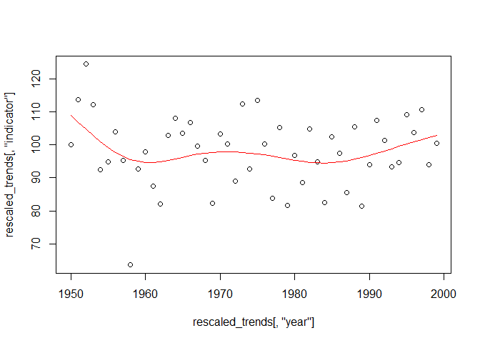

require(snowfall)Introduction
This document shows how to use the indicator pipeline to create biodiversity indicators such as those for DEFRA’s Biodiversity Indicators in Your Pocket. The pipeline is shared in the form of an R package called ‘BRCindicators’ making it easy to share and maintain.
The functions in BRCindicators work with yearly estimates of species abundance or occurrence and aggregate them into an scaled indicator value with bootstrapped confidence intervals
This package has the ability to read in the output of occupancy models created in the R package sparta, a package for estimating species trends from occurrence data. This package can be installed from Github and details of how to use the package are given in the package vignette. There is no need to use sparta to create your yearly species estimates as BRCindicators can also work with other data.
To create an indicator we first need to have species trends, let’s create some using the sparta R package.
Creating yearly estimates of occurrence in sparta
If you already have yearly estimates of abundance or occurrence for your species you can skip this stage. Here we show how you can create these estimates from raw species observation data using sparta.
# Install BRCindicators from github
library(devtools)
#install_github('biologicalrecordscentre/sparta')Let’s assume you have some raw data already, we can under take occupancy modelling like this
# Create data
n <- 8000 # size of dataset
nyr <- 50 # number of years in data
nSamples <- 200 # set number of dates
nSites <- 100 # set number of sites
set.seed(125) # set a random seed
# Create somes dates
first <- as.Date(strptime("1950/01/01", "%Y/%m/%d"))
last <- as.Date(strptime(paste(1950+(nyr-1),"/12/31", sep=''), "%Y/%m/%d"))
dt <- last-first
rDates <- first + (runif(nSamples)*dt)
# taxa are set semi-randomly
taxa_probabilities <- seq(from = 0.1, to = 0.7, length.out = 26)
taxa <- sample(letters, size = n, TRUE, prob = taxa_probabilities)
# sites are visited semi-randomly
site_probabilities <- seq(from = 0.1, to = 0.7, length.out = nSites)
site <- sample(paste('A', 1:nSites, sep=''), size = n, TRUE, prob = site_probabilities)
# the date of visit is selected semi-randomly from those created earlier
time_probabilities <- seq(from = 0.1, to = 0.7, length.out = nSamples)
time_period <- sample(rDates, size = n, TRUE, prob = time_probabilities)
myData <- data.frame(taxa, site, time_period)For demonstration purposes I have a faked dataset of 8000 species observations. In my dataset the species are named after the letters in the alphabet. Below I show how I can use the Bayesian occupancy models in sparta to create yearly estimates of occurrence. For more information please see the vignette for sparta
# Preview of my data
head(myData)## taxa site time_period
## 1 r A51 1970-01-14
## 2 v A87 1980-09-29
## 3 e A56 1996-04-14
## 4 z A28 1959-01-16
## 5 r A77 1970-09-21
## 6 x A48 1990-02-25
# First format our data
formattedOccData <- formatOccData(taxa = myData$taxa,
site = myData$site,
survey = myData$time_period)## Warning in errorChecks(taxa = taxa, site = site, survey = survey, replicate =
## replicate, : 94 out of 8000 observations will be removed as duplicates
# Here we are going to use the package snowfall to parallelise
library(snowfall)
# I have 4 cpus on my PC so I set cpus to 4
# when I initialise the cluster
sfInit(parallel = TRUE, cpus = 4)## R Version: R version 4.4.0 (2024-04-24 ucrt)## snowfall 1.84-6.3 initialized (using snow 0.4-4): parallel execution on 4 CPUs.
# Export my data to the cluster
sfExport('formattedOccData')
# I create a function that takes a species name and runs my model
occ_mod_function <- function(taxa_name){
library(sparta)
# Note that this will write you results to your computer
# the location is set to your user folder
occ_out <- occDetFunc(taxa_name = as.character(taxa_name),
n_iterations = 200,
burnin = 15,
occDetdata = formattedOccData$occDetdata,
spp_vis = formattedOccData$spp_vis,
write_results = TRUE,
output_dir = '~/Testing_indicator_pipe',
seed = 123)
}
# I then run this in parallel
system.time({
para_out <- sfClusterApplyLB(unique(myData$taxa), occ_mod_function)
})## user system elapsed
## 0.06 0.07 162.00
# Stop the cluster
sfStop()##
## Stopping cluster
# We can see all the files this has created
list.files('~/Testing_indicator_pipe')## [1] "a.rdata" "b.rdata" "c.rdata" "d.rdata" "e.rdata" "f.rdata" "g.rdata"
## [8] "h.rdata" "i.rdata" "j.rdata" "k.rdata" "l.rdata" "m.rdata" "n.rdata"
## [15] "o.rdata" "p.rdata" "q.rdata" "r.rdata" "s.rdata" "t.rdata" "u.rdata"
## [22] "v.rdata" "w.rdata" "x.rdata" "y.rdata" "z.rdata"Installing BRCindicators
Installing the package is easy and can be done in a couple of lines
library(devtools)
install_github('biologicalrecordscentre/BRCindicators')Summarising sparta output for an indicator
Now that we have some species trends data to work with (no doubt you already have your own) we can use the first function in BRCindicators. This function reads in all the output files from sparta (which are quite large and complex) and returns a simple summary table that we can use for calculating the indicator. If you have done your analysis without using sparta you can skip to the next step.
library(BRCindicators)
# All we have to supply is the directory where out data is saved
# You will note this is the 'output_dir' passed to sparta above.
trends_summary <- summarise_occDet(input_dir = '~/Testing_indicator_pipe')## Loading data...done
# Lets see the summary
head(trends_summary[,1:5])## year a b c d
## [1,] 1950 0.71950820 0.7444262 0.5445902 0.7289617
## [2,] 1951 0.64792350 0.7115847 0.6653552 0.5564481
## [3,] 1952 0.61234973 0.6830055 0.2850820 0.5503279
## [4,] 1953 0.47890710 0.4786339 0.5400546 0.6146448
## [5,] 1954 0.40245902 0.5300546 0.6093443 0.4449180
## [6,] 1955 0.04765027 0.4463934 0.6180874 0.3305464Returned from this function is a summary of the data as a matrix. In each row we have the year, specified in the first column, and each subsequent column is a species. The values in the table are the mean of the posterior for the predicted proportion of sites occupied, a measure of occurrence.
Calculating indicator values
Once we have species-year indicies we are in a position to proceed to calculating an indictor. To do this there are a number of mehods available, some of which are presented here in ‘BRCindicators’
Geometric mean
The geometric mean method is often used with data that do not have errors associated with them.
The first step is to re-scale the data so that the value for all species in the first year is the same. Once this is done we calculate the geometric mean across species for each year creating the indicator value. This function also accounts for species that have no data at the beginning of the dataset by entering them at the geometric mean for that year, this stops them dramatically changing the indicator value in the year they join the dataset. It also accounts for species that leave the dataset before the end by holding them at their last value. Finally limits to species values can be given, preventing extremely high or low values biasing the indicator.
Rescaling and calculating geometric mean
The data I have generated in ‘trends_summary’ is very easy to work with but to show off what this function can do I’m going to mess it up a bit.
trends_summary[1:3, 'a'] <- NA
trends_summary[1:5, 'b'] <- NA
trends_summary[2:4, 'c'] <- 1000
trends_summary[45:50, 'd'] <- NA
# Let's have a look at these changes
head(trends_summary[,1:5])## year a b c d
## [1,] 1950 NA NA 0.5445902 0.7289617
## [2,] 1951 NA NA 1000.0000000 0.5564481
## [3,] 1952 NA NA 1000.0000000 0.5503279
## [4,] 1953 0.47890710 NA 1000.0000000 0.6146448
## [5,] 1954 0.40245902 NA 0.6093443 0.4449180
## [6,] 1955 0.04765027 0.4463934 0.6180874 0.3305464
tail(trends_summary[,1:5])## year a b c d
## [45,] 1994 0.3276503 0.5717486 0.1508743 NA
## [46,] 1995 0.5151913 0.4853552 0.6555738 NA
## [47,] 1996 0.4673224 0.4795628 0.4220765 NA
## [48,] 1997 0.3340984 0.6895628 0.7624590 NA
## [49,] 1998 0.6545355 0.1724044 0.3939891 NA
## [50,] 1999 0.5532787 0.3660656 0.7278142 NANow that I have ‘messed up’ the data a bit we have two species with data missing at the beginning and one species with data missing at the end. We also have one species with some very high values.
Now lets run this through the re-scaling function.
# Let's run this data through our scaling function (all defaults used)
rescaled_trends <- rescale_species(Data = trends_summary)
# Here's the result
head(rescaled_trends[,c('year', 'indicator', 'a', 'b', 'c', 'd')])## year indicator a b c d
## [1,] 1950 100.00000 NA NA 100.0000 100.00000
## [2,] 1951 113.66130 NA NA 10000.0000 76.33433
## [3,] 1952 124.43795 NA NA 10000.0000 75.49475
## [4,] 1953 112.24009 112.24009 NA 10000.0000 84.31784
## [5,] 1954 92.53638 94.32317 NA 111.8904 61.03448
## [6,] 1955 94.92278 11.16766 94.92278 113.4959 45.34483## year indicator a b c d
## [45,] 1994 94.69719 76.79046 121.57878 27.70419 96.72414
## [46,] 1995 109.25300 120.74391 103.20775 120.37929 96.72414
## [47,] 1996 103.80961 109.52502 101.97604 77.50351 96.72414
## [48,] 1997 110.66363 78.30168 146.63123 140.00602 96.72414
## [49,] 1998 93.88742 153.40162 36.66071 72.34598 96.72414
## [50,] 1999 100.38848 129.67035 77.84156 133.64439 96.72414You can see that species ‘a’ and ‘b’ enter the dataset at the geometric mean (the indicator value), all species are indexed at 100 in the first year and the very high values in ‘c’ are capped at 10000 at the end ‘d’ has been held at it’s end value.
The ‘indicator’ column that is returned here is our indicator, calculated as the geometric mean of all the species in the data set.
Confidence intervals
We can get confidence intervals for this indicator by bootstrapping across species. We have a function for that too!
# This function takes just the species columns
scaled_species <- rescaled_trends[,!colnames(rescaled_trends) %in% c('year', 'indicator')]
indicator_CIs <- bootstrap_indicator(Data = scaled_species)## | | | 0% | | | 1% | |= | 1% | |= | 2% | |== | 2% | |== | 3% | |== | 4% | |=== | 4% | |=== | 5% | |==== | 5% | |==== | 6% | |===== | 6% | |===== | 7% | |===== | 8% | |====== | 8% | |====== | 9% | |======= | 9% | |======= | 10% | |======= | 11% | |======== | 11% | |======== | 12% | |========= | 12% | |========= | 13% | |========= | 14% | |========== | 14% | |========== | 15% | |=========== | 15% | |=========== | 16% | |============ | 16% | |============ | 17% | |============ | 18% | |============= | 18% | |============= | 19% | |============== | 19% | |============== | 20% | |============== | 21% | |=============== | 21% | |=============== | 22% | |================ | 22% | |================ | 23% | |================ | 24% | |================= | 24% | |================= | 25% | |================== | 25% | |================== | 26% | |=================== | 26% | |=================== | 27% | |=================== | 28% | |==================== | 28% | |==================== | 29% | |===================== | 29% | |===================== | 30% | |===================== | 31% | |====================== | 31% | |====================== | 32% | |======================= | 32% | |======================= | 33% | |======================= | 34% | |======================== | 34% | |======================== | 35% | |========================= | 35% | |========================= | 36% | |========================== | 36% | |========================== | 37% | |========================== | 38% | |=========================== | 38% | |=========================== | 39% | |============================ | 39% | |============================ | 40% | |============================ | 41% | |============================= | 41% | |============================= | 42% | |============================== | 42% | |============================== | 43% | |============================== | 44% | |=============================== | 44% | |=============================== | 45% | |================================ | 45% | |================================ | 46% | |================================= | 46% | |================================= | 47% | |================================= | 48% | |================================== | 48% | |================================== | 49% | |=================================== | 49% | |=================================== | 50% | |=================================== | 51% | |==================================== | 51% | |==================================== | 52% | |===================================== | 52% | |===================================== | 53% | |===================================== | 54% | |====================================== | 54% | |====================================== | 55% | |======================================= | 55% | |======================================= | 56% | |======================================== | 56% | |======================================== | 57% | |======================================== | 58% | |========================================= | 58% | |========================================= | 59% | |========================================== | 59% | |========================================== | 60% | |========================================== | 61% | |=========================================== | 61% | |=========================================== | 62% | |============================================ | 62% | |============================================ | 63% | |============================================ | 64% | |============================================= | 64% | |============================================= | 65% | |============================================== | 65% | |============================================== | 66% | |=============================================== | 66% | |=============================================== | 67% | |=============================================== | 68% | |================================================ | 68% | |================================================ | 69% | |================================================= | 69% | |================================================= | 70% | |================================================= | 71% | |================================================== | 71% | |================================================== | 72% | |=================================================== | 72% | |=================================================== | 73% | |=================================================== | 74% | |==================================================== | 74% | |==================================================== | 75% | |===================================================== | 75% | |===================================================== | 76% | |====================================================== | 76% | |====================================================== | 77% | |====================================================== | 78% | |======================================================= | 78% | |======================================================= | 79% | |======================================================== | 79% | |======================================================== | 80% | |======================================================== | 81% | |========================================================= | 81% | |========================================================= | 82% | |========================================================== | 82% | |========================================================== | 83% | |========================================================== | 84% | |=========================================================== | 84% | |=========================================================== | 85% | |============================================================ | 85% | |============================================================ | 86% | |============================================================= | 86% | |============================================================= | 87% | |============================================================= | 88% | |============================================================== | 88% | |============================================================== | 89% | |=============================================================== | 89% | |=============================================================== | 90% | |=============================================================== | 91% | |================================================================ | 91% | |================================================================ | 92% | |================================================================= | 92% | |================================================================= | 93% | |================================================================= | 94% | |================================================================== | 94% | |================================================================== | 95% | |=================================================================== | 95% | |=================================================================== | 96% | |==================================================================== | 96% | |==================================================================== | 97% | |==================================================================== | 98% | |===================================================================== | 98% | |===================================================================== | 99% | |======================================================================| 99% | |======================================================================| 100%
# Returned are the CIs for our indicator
head(indicator_CIs)## quant_025 quant_975
## [1,] 100.00000 100.0000
## [2,] 79.51664 185.3712
## [3,] 92.57867 197.7989
## [4,] 71.91175 186.9973
## [5,] 76.48790 111.0772
## [6,] 74.68679 116.8558Smoothing
It is sometimes desirable to create a smoothed indicator value from the raw values. This can be achieved by fitting a GAM (general additive model) to the indicator using a spline. This spline is a smoothed curve that goes through the raw values for the indicator and is fitted using the function ‘gam’ in the ‘mgcv’ R package.
# The smoothing function takes the indicator values
smoothed_indicator <- GAM_smoothing(rescaled_trends[,'indicator'])
# In this example there is little support for a non-linear trend and
# so the line almost linear
plot(x = rescaled_trends[,'year'], y = rescaled_trends[,'indicator'])
lines(x = rescaled_trends[,'year'], y = smoothed_indicator, col = 'red')
# But if our indicator did support a non-linear trend it might look
# like this
eg_indicator <- jitter(sort(rnorm(50)), amount = 0.5)
eg_smoothed <- GAM_smoothing(eg_indicator)
plot(x = 1:50, y = eg_indicator)
lines(x = 1:50, y = eg_smoothed, col = 'red')Where there is little support for a non-linear trend a GAM smoothed line will tend towards linear. Where there is good support for a non-linear trend the smoothed line will become more ‘bendy’.
Plotting
We now have our indicator and the confidence intervals around it. The next step is to plot it. We have included a function that creates a simple plot using ggplot2, however you could easily create your own plots in R using the data.
# Plot our indicator.
plot_indicator(indicator = rescaled_trends[,'indicator'],
smoothed_line = smoothed_indicator,
CIs = indicator_CIs)In this plot you can see the high upper confidence interval in years 2-4, this is due to the artificially high values we gave to species ‘c’.
Bayesian Meta-Analysis (BMA)
The Bayesian Meta-Analysis method, or BMA, is suited to data with standard errors associated with them. As with other methods we require data from more than one species, across a number of years, with an error for each species-year estimate.
# Here is an example dataset for the BMA method
data <- data.frame(species = rep(letters, each = 50),
year = rep(1:50, length(letters)),
index = runif(n = 50 * length(letters), min = 0, max = 1),
se = runif(n = 50 * length(letters), min = 0.01, max = .1))
head(data)## species year index se
## 1 a 1 0.4783269 0.02657337
## 2 a 2 0.4443901 0.08308297
## 3 a 3 0.9653410 0.07088607
## 4 a 4 0.2612954 0.06101668
## 5 a 5 0.7607192 0.04758781
## 6 a 6 0.7500249 0.01699128It is important that your data is in the same format and that your
columns are in the same order and have the same names. Remember you can
use the function read.csv() to read in the data from a .csv
on your computer.
BMA is run using the function bma, here we will use the
default settings and then see what we can change.
bma_indicator <- bma(data)## [1] "Warning: No negative index values detected. Are you sure you transformed the data?"
##
## Processing function input.......
##
## Done.
##
## Compiling model graph
## Resolving undeclared variables
## Allocating nodes
## Graph information:
## Observed stochastic nodes: 1274
## Unobserved stochastic nodes: 1291
## Total graph size: 8158
##
## Initializing model
##
## Adaptive phase.....
## Adaptive phase complete
##
##
## Burn-in phase, 5000 iterations x 3 chains
##
##
## Sampling from joint posterior, 5000 iterations x 3 chains
##
##
## Calculating statistics.......
##
## Done.The function returns a plot to your screen which is a diagnostic plot
of the model. When the model has converged (i.e. reached a point where
the three chains agree on the answer) the lines on the plots on the left
will sit on top of one another and the plots on the right will have a
nice bell shape. You can turn off this plot by setting plot
to FALSE. By default the method runs the chains in series.
Running them in parallel makes the models run faster (about half the
time) but will slow down your computer more. We can change this with the
parameter parallel. The number of iterations the model runs
is controlled by n.iter and defaults to 10000. If you can
it is better to run it for more iterations, though this will take
longer. m.scale gives the scale your data is on. It is very
important that this is correct, choose from ‘loge’ (natural log,
sometimes simply called ‘log’), ‘log10’ (log to the base 10), or ‘logit’
(output from models of proportions or probabilities).
Let’s implement a few of these changes
bma_indicator2 <- bma(data,
parallel = TRUE,
n.iter = 500,
m.scale = 'log10')## [1] "Warning: No negative index values detected. Are you sure you transformed the data?"
##
## Processing function input.......
##
## Done.
##
## Beginning parallel processing using 11 cores. Console output will be suppressed.
##
## Parallel processing completed.
##
## Calculating statistics.......
##
## Done.Because we have reduced the number of interations the model no longer has a good convergence. The lines on the graphs on the left do not overlap and the graphs on the right are no longer a smooth bell shape.
The object that is returned is a data.frame with years as rows and
columns giving the year value, index value and confidence intervals. You
can write this to a csv using the function write.csv.
head(bma_indicator)## Year Index.Mprime lowerCI.Mprime upperCI.Mprime Index.M lowerCI.M upperCI.M
## 1 1 100.00000 100.00000 100.0000 100.00000 100.00000 100.0000
## 2 2 99.28257 96.55888 101.9275 99.36687 96.95978 101.7398
## 3 3 98.70232 94.93140 102.6840 98.96504 94.93866 103.0453
## 4 4 98.33416 93.95436 102.8283 98.76247 93.68349 104.0300
## 5 5 98.37354 93.83166 103.2512 98.72980 92.84002 104.7310
## 6 6 98.82353 94.46779 103.5405 98.83989 92.47682 105.3083We can use the plotting function in BRCindicators to plot the results of this analysis, which in this case are not all that interesting!
plot_indicator(indicator = bma_indicator[,'Index.M'],
CIs = bma_indicator[,c(3,4)])Multi-species Indicator
The multi-species indicator method was developed by Statistics
Netherlands and the code is made available on their
website. To find out more about the inner working of this method
please read the detailed
documentation on the authors website. Here is a simple example of
how this method runs in BRCindicators.
# Create some example data in the format required
nyr = 20
species = rep(letters, each = nyr)
year = rev(rep(1:nyr, length(letters)))
# Create an index value that increases with time
index = rep(seq(50, 100, length.out = nyr), length(letters))
# Add randomness to species
index = index * runif(n = length(index), 0.7, 1.3)
# Add correlated randomness across species, to years
index = index * rep(runif(0.8, 1.2, n = nyr), length(letters))
se = runif(n = nyr * length(letters), min = 10, max = 20)
data <- data.frame(species, year, index, se)
# Our species are decreasing
plot(data$year, data$index)
# Species index values need to be 100 in the base year. Here I use
# the first year as my base year and rescale to 100. The standard error
# in the base year should be 0.
min_year <- min(data$year)
for(sp in unique(data$species)){
subset_data <- data[data$species == sp, ]
multi_factor <- 100 / subset_data$index[subset_data$year == min_year]
data$index[data$species == sp] <- data$index[data$species == sp] * multi_factor
data$se[data$species == sp] <- data$se[data$species == sp] * multi_factor
data$se[data$species == sp][1] <- 0
}
# Our first year is now indexed at 100
plot(data$year, data$index)
# Alternativly I could read in data from a csv
# data <- read.csv('path/to/my/data.csv')
# Run the MSI function
msi_out <- msi(data)
head(msi_out$CV)## species mean_CV
## 1 a 0.2073205
## 2 b 0.2097742
## 3 c 0.2327759
## 4 d 0.2181222
## 5 e 0.2148589
## 6 f 0.2171923
# I can capture the output figures too
# pdf('test.pdf')
# msi_out <- msi(data)
# dev.off()The code returns two plots to the console, the first plot shows the
coefficient of variation (CV) for each of the species. Species with high
values of CV may adversly effect the relaibility of the trend
estimation. Use this graph to identify the CV values of the species and
use the maxCV parameter to set a threshold above which
species will be excluded. The results of excluding species in this way
can be tested by comparing trend plots. The CV values are hard to assign
to species from this plot as the species are coded to numbers. To see
the raw values look at the CV component of msi_out
(i.e. msi_out$CV). The second plot shows the smoothed trend
and the MSI values. These two figures can be captured in the usual way
in R by using pdf() for example. In the example I create a
dataset from random numbers but usually you would use
read.csv() to read in data from a local file.
Here is a second example which sets some additional parameters. The
parameters for msi get passed to msi_tool so
to see a list of all the parameters you can change look at the help
documentation in msi_tool usign ?msi_tool at
the R console. I cover most of hte important ones here.
msi_out <- msi(data,
nsim = 500, # The number of Mote Carlo simulations
SEbaseyear = 10, # The year to index on
plotbaseyear = 15, # The year to set as 100 in plots
index_smoot = 'INDEX', # plotbaseyear uses MSI not trend
span = 0.7, # 'wigglyness' of line, between 0 and 1
lastyears = 5, # last X years of time series for short-term trends
maxCV = 10, # maximum allowed Coefficient of Variation
changepoint = 10, # compare trends before and after this year
truncfac = 8, # max year-to-year index ratio
TRUNC = 5, #set all indices below TRUNC to this
plot = TRUE # should the plots be returned?)
)
This set of parameters is unrealistic but shows the options available. Note that in the second graph the year 10 point now has a se = 0, year 15 MSI is set to 100, and the short term trend is reported for the last 5 years.
The analysis also returns data which provide more insights into the analysis and let you create your own plots if required.
# The returned object has 2 elements
head(msi_out$results)## year MSI sd_MSI lower_CL_MSI upper_CL_MSI Trend lower_CL_trend
## 1 1 174.55 8.59 158.52 192.22 165.98 153.83
## 2 2 160.34 7.87 145.63 176.55 172.92 164.98
## 3 3 189.88 9.07 172.92 208.52 177.94 171.72
## 4 4 169.84 9.00 153.08 188.44 180.72 173.44
## 5 5 164.29 9.15 147.30 183.24 180.97 173.44
## 6 6 198.95 9.07 181.95 217.54 179.10 171.72
## upper_CL_trend trend_class
## 1 178.73 moderate_decline
## 2 182.34 moderate_decline
## 3 184.17 moderate_decline
## 4 187.89 moderate_decline
## 5 187.89 moderate_decline
## 6 187.89 moderate_declineThe first of the two elements (results) returned gives
all the data, and a little more, that is presented in the second
figure.
# The returned object has 2 elements
msi_out$trends## Measure value significance
## 1 overall trend 0.9633 moderate decline
## 2 SE overall trend 0.0021
## 3 trend last 5 years 0.9359 moderate decline
## 4 SE trend last 5 years 0.0166
## 5 changepoint (10) 10.0000
## 6 trend before changepoint (10) 0.9891 moderate decline
## 7 SE trend before changepoint (10) 0.0048
## 8 trend after changepoint (10) 0.9621 moderate decline
## 9 SE trend after changepoint (10) 0.0045
## 10 % change -43.3920 p<0.01
## 11 SE % change 3.0630
## 12 % change last 5 years -9.6510 p<0.01
## 13 SE % change last 5 years 2.5580
## 14 changepoint NA p<0.01
# I could write this as a csv too
# write.csv(msi_out$trends, file = 'path/to/my/output.csv')The second element (trends) returned give a summary of
various trend assessments across the time series.
We have also added a plot method for the MSI output which provides a plot similar to that of the second figure we have seen already. Lets use this plot method to explore the effect of changing the span value in the analysis
for(i in c(0.3, 0.5, 0.7)){ # use a range of values for span
msi_out <- msi(data, span = i, # span is set to i
nsim = 200, plot = FALSE)
print( # print makes the plot visible in the for loop
plot(msi_out, title = paste('MSI - span =', i)) # plot
)
}As the value of span gets closer to 1 the trend line gets smoother.
Lambda Indicator
The lambda indicator calculates an indicator using growth rates from one year to the next. Formulating the indicator in terms of growth rates has two distinct advantages over the conventional approach to constructing indicators. First, it means that the categorisation of species as ‘increasing’ or ‘decreasing’ can be made from the same set of data (the growth rates) as the construction of the indicator. Second, it provides an elegant solution to the problem of species that join the indicator after the first year (i.e. where the first year is unreliable): other indicators typically adopt a complicated rescaling approach to ensure that species entering the indicator after the first year do not bias the overall assessment. It also makes a simple and robust, though untestable, assumption about species that drop out of the indicator prior to the final year: specifically it assumes that their fluctuations are the same, in aggregate, as those of the species that remain in the indicator. For more details see http://webarchive.nationalarchives.gov.uk/20170302170037/http://jncc.defra.gov.uk/Docs/UKBI2015_TechBG_C4b-D1c_Bayesian_Final.docx
Very few species’ models produced reliable occupancy estimates for every year, so a majority of the time series contain missing values. This presents a problem for estimating growth rates for each species-year combination. Missing values of growth rate that would be equivalent to linear interpolation of the log odds between adjacent years with reliable estimates were therefore calculated. This indicator can therefore work with missing values.
Input data is on the occupancy scale, and is therefore bounded between 0 and 1.
# number of species
nsp = 50
# number of years
nyr = 40
#number of iterations
iter = 500
# Build a random set of data
myArray <- array(data = rnorm(n = nsp*nyr*iter,
mean = 0.5,
sd = 0.1),
dim = c(nsp, nyr, iter),
dimnames = list(paste0('SP',1:nsp),
1:nyr,
1:iter))
# Ensure values are bounded by 0 and 1
myArray[myArray > 1] <- 1
myArray[myArray < 0] <- 0
str(myArray)## num [1:50, 1:40, 1:500] 0.501 0.44 0.454 0.309 0.307 ...
## - attr(*, "dimnames")=List of 3
## ..$ : chr [1:50] "SP1" "SP2" "SP3" "SP4" ...
## ..$ : chr [1:40] "1" "2" "3" "4" ...
## ..$ : chr [1:500] "1" "2" "3" "4" ...lambda_indicator takes in an array of data, a
three-dimensional matrix. The dimensions of this array represent
species, years, and iterations. Each row represents a species and each
column a year. The third dimension of the array contains the iterations.
Essentially each slice contains occupancy estimates for each species
year combination for a single iteration and the overall array contains
as many slices as there are iterations.
# Run the lambda_interpolation method on this data
myIndicator <- lambda_indicator(myArray)
# Plot the indicator
plot_indicator(myIndicator$summary[,'indicator'],
myIndicator$summary[,c('lower' ,'upper')])There are a number of options available in the
lambda_indicator function
myIndicator <- lambda_indicator(myArray,
index = 1, # Set the index value to 1 not 100
year_range = c(30,40), # Set year range
threshold_yrs = 5) # set a threshold
plot_indicator(myIndicator$summary[,'indicator'],
myIndicator$summary[,c('lower' ,'upper')])Note that there are a range of threshold functions that allow you to adjust which data points are used in the indicator. There are options to remove species year estimates based on their standard deviaction, Rhat value and based on the number of years a species is present in the dataset. Note that the Rhat threshold can only be used if you are using a directory path as you input rather than an array.
Creating a custom pipeline function
We have demonstrated how you might run the indicator functions one at a time, however in a ‘pipeline’ we want data to flow through seamlessly. Additionally there are a number of parameters in the functions that we have not shown you that you might find useful. Here is an example of how you can create your own pipeline function. Our function will wrap around the functions described above, setting the parameters to meet our needs. Once we have done this it will allow use to execute our pipeline in one line.
# I call my function 'run_pipeline' and the only arguement it
# takes is the directory of sparta's output
run_pipeline <- function(input_dir){
require(sparta)
require(BRCindicators)
# Create the trends summary
trends_summary <- summarise_occDet(input_dir = input_dir)
# Rescale the values and get the indicator values
# Here I set the index to 1 and change the value limits
rescaled_trends <- rescale_species(Data = trends_summary,
index = 1,
max = 100,
min = 0.001)
# Bootstrap the indicator to get CIs
scaled_species <- rescaled_trends[,!colnames(rescaled_trends) %in% c('year', 'indicator')]
# This time I set the iterations to twice the default and
# use custom confidence intervals
indicator_CIs <- bootstrap_indicator(Data = scaled_species,
CI_limits = c(0.25, 0.75),
iterations = 20000)
# Get the smoothed indicator line
smoothed_indicator <- GAM_smoothing(rescaled_trends[,'indicator'])
# This time I specify the years and index value
plot_indicator(indicator = rescaled_trends[,'indicator'],
year = rescaled_trends[,'year'],
index = 1,
CIs = indicator_CIs,
smoothed_line = smoothed_indicator)
## I'll return all my data
return(cbind(smoothed_indicator, indicator_CIs, as.data.frame(trends_summary)))
}Once we have created this function we can run this pipeline on a directory in one line, or put it in a loop to run across many directories.
# Now we can run the pipeline in one line, like a boss
indicator_data <- run_pipeline(input_dir = '~/Testing_indicator_pipe')## Loading data...done
## | | | 0% | | | 1% | |= | 1% | |= | 2% | |== | 2% | |== | 3% | |== | 4% | |=== | 4% | |=== | 5% | |==== | 5% | |==== | 6% | |===== | 6% | |===== | 7% | |===== | 8% | |====== | 8% | |====== | 9% | |======= | 9% | |======= | 10% | |======= | 11% | |======== | 11% | |======== | 12% | |========= | 12% | |========= | 13% | |========= | 14% | |========== | 14% | |========== | 15% | |=========== | 15% | |=========== | 16% | |============ | 16% | |============ | 17% | |============ | 18% | |============= | 18% | |============= | 19% | |============== | 19% | |============== | 20% | |============== | 21% | |=============== | 21% | |=============== | 22% | |================ | 22% | |================ | 23% | |================ | 24% | |================= | 24% | |================= | 25% | |================== | 25% | |================== | 26% | |=================== | 26% | |=================== | 27% | |=================== | 28% | |==================== | 28% | |==================== | 29% | |===================== | 29% | |===================== | 30% | |===================== | 31% | |====================== | 31% | |====================== | 32% | |======================= | 32% | |======================= | 33% | |======================= | 34% | |======================== | 34% | |======================== | 35% | |========================= | 35% | |========================= | 36% | |========================== | 36% | |========================== | 37% | |========================== | 38% | |=========================== | 38% | |=========================== | 39% | |============================ | 39% | |============================ | 40% | |============================ | 41% | |============================= | 41% | |============================= | 42% | |============================== | 42% | |============================== | 43% | |============================== | 44% | |=============================== | 44% | |=============================== | 45% | |================================ | 45% | |================================ | 46% | |================================= | 46% | |================================= | 47% | |================================= | 48% | |================================== | 48% | |================================== | 49% | |=================================== | 49% | |=================================== | 50% | |=================================== | 51% | |==================================== | 51% | |==================================== | 52% | |===================================== | 52% | |===================================== | 53% | |===================================== | 54% | |====================================== | 54% | |====================================== | 55% | |======================================= | 55% | |======================================= | 56% | |======================================== | 56% | |======================================== | 57% | |======================================== | 58% | |========================================= | 58% | |========================================= | 59% | |========================================== | 59% | |========================================== | 60% | |========================================== | 61% | |=========================================== | 61% | |=========================================== | 62% | |============================================ | 62% | |============================================ | 63% | |============================================ | 64% | |============================================= | 64% | |============================================= | 65% | |============================================== | 65% | |============================================== | 66% | |=============================================== | 66% | |=============================================== | 67% | |=============================================== | 68% | |================================================ | 68% | |================================================ | 69% | |================================================= | 69% | |================================================= | 70% | |================================================= | 71% | |================================================== | 71% | |================================================== | 72% | |=================================================== | 72% | |=================================================== | 73% | |=================================================== | 74% | |==================================================== | 74% | |==================================================== | 75% | |===================================================== | 75% | |===================================================== | 76% | |====================================================== | 76% | |====================================================== | 77% | |====================================================== | 78% | |======================================================= | 78% | |======================================================= | 79% | |======================================================== | 79% | |======================================================== | 80% | |======================================================== | 81% | |========================================================= | 81% | |========================================================= | 82% | |========================================================== | 82% | |========================================================== | 83% | |========================================================== | 84% | |=========================================================== | 84% | |=========================================================== | 85% | |============================================================ | 85% | |============================================================ | 86% | |============================================================= | 86% | |============================================================= | 87% | |============================================================= | 88% | |============================================================== | 88% | |============================================================== | 89% | |=============================================================== | 89% | |=============================================================== | 90% | |=============================================================== | 91% | |================================================================ | 91% | |================================================================ | 92% | |================================================================= | 92% | |================================================================= | 93% | |================================================================= | 94% | |================================================================== | 94% | |================================================================== | 95% | |=================================================================== | 95% | |=================================================================== | 96% | |==================================================================== | 96% | |==================================================================== | 97% | |==================================================================== | 98% | |===================================================================== | 98% | |===================================================================== | 99% | |======================================================================| 99% | |======================================================================| 100%
head(indicator_data)## smoothed_indicator quant_25 quant_75 year a b c
## 1 0.9176004 1.0000000 1.0000000 1950 0.71950820 0.7444262 0.5445902
## 2 0.9180913 0.8852408 1.0106197 1951 0.64792350 0.7115847 0.6653552
## 3 0.9185822 0.9424826 1.0381675 1952 0.61234973 0.6830055 0.2850820
## 4 0.9190731 0.8238429 1.0059378 1953 0.47890710 0.4786339 0.5400546
## 5 0.9195640 0.8421503 0.9556367 1954 0.40245902 0.5300546 0.6093443
## 6 0.9200549 0.8428048 1.0049734 1955 0.04765027 0.4463934 0.6180874
## d e f g h i j
## 1 0.7289617 0.5140437 0.5191257 0.6771585 0.77109290 0.3362842 0.6269399
## 2 0.5564481 0.4214208 0.6875956 0.6949180 0.15005464 0.5807104 0.6743716
## 3 0.5503279 0.4503825 0.4346995 0.8420765 0.75590164 0.7197268 0.4124590
## 4 0.6146448 0.4059563 0.7480874 0.4806557 0.02382514 0.8195082 0.7612022
## 5 0.4449180 0.8789071 0.8591257 0.3380874 0.49256831 0.4837705 0.6448634
## 6 0.3305464 0.8898907 0.6350820 0.8497814 0.81546448 0.1274863 0.5738251
## k l m n o p q
## 1 0.6919126 0.7751366 0.4428415 0.9062295 0.5555191 0.3422404 0.8508743
## 2 0.3614754 0.7466667 0.7452459 0.8836066 0.9113661 0.7820219 0.3772131
## 3 0.8724590 0.6345902 0.6355191 0.6290710 0.7693443 0.6283607 0.8969399
## 4 0.6209836 0.6358470 0.8611475 0.9265027 0.7610929 0.4493989 0.9014754
## 5 0.3384153 0.7289617 0.5253552 0.7102186 0.9492896 0.7979781 0.8237158
## 6 0.5411475 0.7955191 0.8191257 0.8801639 0.9270492 0.9244262 0.6891803
## r s t u v w x
## 1 0.3624590 0.8491257 0.9315847 0.8820765 0.7602186 0.9207650 0.8680328
## 2 0.7379235 0.6858470 0.4902732 0.9032240 0.6163388 0.8891803 0.7600546
## 3 0.8562295 0.8755738 0.5028415 0.9459563 0.6913115 0.6890710 0.7570492
## 4 0.6147541 0.8377049 0.9469945 0.7153552 0.9408743 0.7243169 0.8547541
## 5 0.4848634 0.3191803 0.9298361 0.3034426 0.8632787 0.8720765 0.4791257
## 6 0.6475410 0.8012568 0.6865574 0.9415301 0.8552459 0.7222404 0.8656284
## y z
## 1 0.8845355 0.9492350
## 2 0.8683607 0.8152459
## 3 0.8835519 0.8234973
## 4 0.8295082 0.7040437
## 5 0.9681421 0.8576503
## 6 0.8666667 0.7646448